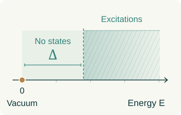
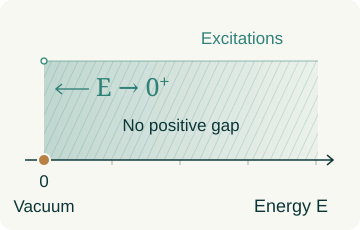

Construct the theory.
Start with controlled approximations. Remove the cutoffs. Show that meaningful, nontrivial quantum observables survive and obey the principles of a physical quantum field theory.
EXISTENCEFrom a finite lattice to a continuum quantum field.
Follow the released existence construction.
A visual reading of the October submission and the committee’s November assessment. The existence construction is out; the mass gap remains open.
Yang–Mills theory describes fields whose force carriers interact with one another. In its quantum form, it underpins our description of the strong force. The challenge is to give this theory a complete mathematical foundation.
For every compact simple gauge group \(G\), prove that a nontrivial quantum Yang–Mills theory exists on \(\mathbb{R}^{4}\) and has a mass gap \(\Delta > 0\).
Here \(\mathbb{R}^{4}\) is Euclidean spacetime. “Exists” means a nontrivial quantum field theory meeting the required axiomatic standards, not just a formal path integral.
Start with controlled approximations. Remove the cutoffs. Show that meaningful, nontrivial quantum observables survive and obey the principles of a physical quantum field theory.
EXISTENCEProve there is a strictly positive energy threshold between the vacuum and every excited state. Arbitrarily low-energy excitations must be excluded.
A POSITIVE MASS GAPA limiting construction must retain the intended interacting Yang–Mills physics. Producing a free theory or a degenerate collection of observables would not settle the problem. The official formulation also asks for gauge-invariant local observables with the appropriate short-distance behavior.
The classical starting point, in one common convention, is
The commutator term captures the non-Abelian self-interaction. Writing down this action is the beginning of the construction.
The vacuum is the lowest-energy state. With a mass gap, every excitation costs at least a fixed, positive energy. Without a gap, excitation energies can approach zero.
A positive minimum excitation energy

An empty interval separates the vacuum from every excited state: \(E\geq\Delta>0\).
Excitation energies approach zero

There is no positive lower bound on excitation energies. The vacuum still has \(E=0\).
Classically massless. Quantum mechanically, a possible gap.
The puzzle is how self-interacting quantum fields can generate a physical energy scale even though no mass parameter appears in the classical pure Yang–Mills action.
Normalize the vacuum energy to zero. A gap requires
For an observable with its vacuum expectation subtracted, Euclidean time evolution has a spectral representation of the form
A common positive lower bound on the excitation energies gives exponential decay in time. A single decaying correlator is not sufficient: it may fail to see lower-energy states in other sectors.
On a finite lattice, the theory is a well-defined integral. Each link carries a group element. A product around a square—a plaquette—measures local curvature.
Now reduce the lattice spacing while keeping the physical box fixed. More degrees of freedom appear. The challenge is to prove that physical predictions approach a meaningful limit.
Remove the ultraviolet cutoff
Remove the finite-volume cutoff
The control refines the lattice at fixed volume. Renormalization-group blocking runs in the opposite direction: it integrates fine structure into coarser variables.
The physical size stays fixed as the lattice spacing decreases.
FIG. 03 A lower-dimensional illustration of a four-dimensional construction.
For \(SU(N)\), one standard convention is
The integration uses Haar measure on the compact gauge group. The bare coupling \(g_0=g_0(a)\) must be tuned as the spacing changes; simply adding more grid points at fixed coupling is not the desired continuum construction. Our visual does not simulate this tuning.
Evidence from physics and numerical calculations is compelling. Making every limiting step rigorous is a different challenge.
Read the mathematical roadmap ↗As \(a\to0\), more field modes enter the theory. Renormalization must control their accumulated effects with estimates that do not deteriorate as the cutoff is removed.
ULTRAVIOLET CONTROLAsymptotic freedom helps at short distances. At longer distances the interaction strengthens, and ordinary weak-coupling expansions no longer suffice. A mass gap must survive the infinite-volume limit.
INFRARED CONTROLGauge symmetry is a redundancy of description. Local gauge choices help estimate fluctuations, but the final physical observables must be gauge invariant. Controlling gauge choices across regions and scales is part of the work.
GAUGE GEOMETRYConvergence alone is not enough. The limit needs the appropriate symmetry, regularity and positivity properties. Reflection positivity is central to reconstructing a physical Hilbert space from Euclidean correlation functions.
RECONSTRUCTIONA finite box can have separated energy levels even when the infinite system is gapless. One needs a positive physical lower bound that remains as the box grows and the lattice is removed.
THE MASS GAPThe released assessment traces a Bałaban-style multiscale construction from the exact Wilson law to a relativistic field theory. Select a stage to see the mechanism, the conclusion, and its boundary. The original problem still requires a mass gap.
A finite lattice has finitely many compact-group link variables. The Wilson action and Haar measure define ordinary, normalized integrals. The committee checks that the submitted law agrees with an independently formalized lattice theory.
A specified gauge theory, with local insertions whose classical meaning is fixed by curvature polynomials.
This finite integral is the starting point. The continuum object constructed later consists of correlations and reconstructed fields, not a probability measure on continuum gauge potentials.
Exact blocking integrates fine variables into effective densities. The proof controls the leading coupling, the additional interactions, and the mixing of local observables. Its gauge fixing preserves the discrete lattice symmetries.
A common controlled RG trajectory and renormalized local fields, with the expected leading asymptotically free running.
A bound on the effective action alone would not suffice. The argument must also control the actual composite-field correlations through arbitrarily many scales.
At each fixed physical volume, the renormalized correlation functions become Cauchy as the lattice spacing shrinks. The full spacing sequence chosen by the construction converges for smooth tests supported away from coincident points.
Continuum correlations in a finite box, with local fields and controlled behavior at separated points.
Full convergence here refers to the chosen spacing sequence. Universality across arbitrary regulators is not proved, and collision-supported tests require additional treatment.
Bounds and equicontinuity on compact sets of separated configurations allow a simultaneous Arzelà–Ascoli extraction. A single volume subsequence works for all finite collections of local fields.
An infinite-volume Euclidean hierarchy of correlations, with substantial properties beyond mere weak existence.
Different volume subsequences are not proved to produce the same answer. The construction supplies existence without proving a spectral gap.
The infinite-volume limit may be a mixture. Characters of a commutative algebra in its vacuum sector define component correlations. Each component clusters, and their probability-weighted average recovers the mixed limit.
A mathematically defined family of component theories, rather than an assumed unique vacuum for the whole mixed limit.
Clustering in a component is not a proved exponential decay rate. The components are not shown to be equal, or individually to arise as periodic-volume subsequential limits.
The construction first establishes continuous Euclidean symmetry in the continuum, infinite-volume limit. Reflection positivity, regularity and analytic continuation then give a relativistic theory in each component, with Lorentz covariance, positive energy, locality and a common dense domain.
A Wightman theory, with a unique translation-invariant vacuum within each selected phase. Stress-tensor and short-distance checks identify its physical content.
Positive energy permits excitation energies approaching zero. A strictly positive mass gap, uniqueness across phases, and confinement remain unproved.
The committee’s stronger combined check keeps the lattice origin, reconstructed fields, Ward identity and trace law on the same construction witness. See what was checked →
These are different mathematical problems. At fixed volume, the chosen ultraviolet sequence converges. At infinite volume, the theorem extracts a convergent subsequence.
Existence does not imply uniqueness. The argument does not show that every route to an infinite box gives the same theory.
The compactness argument →
A curvature polynomial is represented on the lattice by a local insertion. As the cutoff changes, that insertion mixes with other allowed operators. The coefficients can grow while the resulting correlations approach a finite limit.
The proof controls observables, not only the partition function. This is how the continuum fields retain their connection to lattice Yang–Mills.
The field dictionary and mixing maps →
The infinite-volume correlations need not cluster. The construction decomposes them into component theories that do, then reconstructs a physical Hilbert space in every component.
A unique vacuum within a phase is not a proof of a unique phase. Nor does clustering by itself give the positive exponential decay rate needed for a mass gap.
The vacuum algebra and characters →
The finite lattice is not Lorentz invariant. More precisely, the construction starts in Euclidean spacetime, where a grid preserves only discrete rotations and translations. Its preferred directions must disappear from the limiting correlations. Exact lattice gauge invariance does not supply this spacetime symmetry.
Finite spacing and volume.
Only discrete spacetime symmetries.
Both cutoff limits, plus a proof of symmetry of the limiting state.
Reflection positivity and analytic continuation connect to Minkowski spacetime.
Even after the grid is removed, a finite periodic box does not admit all rotations of \(\mathbb R^4\). The symmetry result concerns the continuum, infinite-volume theory. With Euclidean covariance and the other reconstruction requirements established, the proof obtains a Poincaré-covariant theory in each component phase, including proper orthochronous Lorentz symmetry.
The mass gap concerns the energy spectrum of physical states. Confinement concerns the behavior of color charges and, in pure Yang–Mills, is commonly studied through Wilson loops and the energy of separated external sources.
They are closely related physical questions, but proving one should not silently be treated as proving the other. The Millennium problem explicitly requires existence and a positive mass gap.
Greensite on what confinement means ↗FOR RESEARCHERS
For readers with a background in quantum field theory. Follow the lattice measure through renormalization and reconstruction to the precise spectral-gap requirement.
The committee’s assessment supports the existence construction under its stated criterion. It also records formal checks and human review of definitions. It explicitly does not certify the full Jaffe–Witten Millennium problem.
A Wilson-lattice origin, renormalized local fields, a subsequential infinite-volume limit, and Wightman theories in its component phases. A normalized stress tensor and quantitative UV tests connect the construction to Yang–Mills.
The committee reports a clean rebuild, axiom audits, Comparator checks, and additional adapters to independently specified requirements. Its combined check ties the principal conclusions to one construction.
No positive mass gap, no uniqueness across infinite-volume subsequences, and no proof that all phases agree. Confinement and continuum Wilson-loop area laws remain separate tasks.
Edition · 11 November 2026. This guide explains the 28 October submission using the 10 November assessment and selected source declarations. OPE bounds are not all-orders perturbative matching; contact extensions have additional limitations. Read the exact scope and evidence →
Start with the released assessment for the new construction. The official problem, historical RG work and confinement references provide the background needed to read its claims precisely.
Read the released assessment, the official problem statement, the Bałaban–Imbrie–Jaffe chapter, and Greensite’s review.